交易同步过程
1 通过命令cleos调用 cleos transfer ${from_account} ${to_account} ${quantity} 发起交易
2 eos调用chain_plugin 的push_transaction,内部调用注册好的方法。
1 | app().get_method<incoming::methods::transaction_async>(); |
代码截图如下
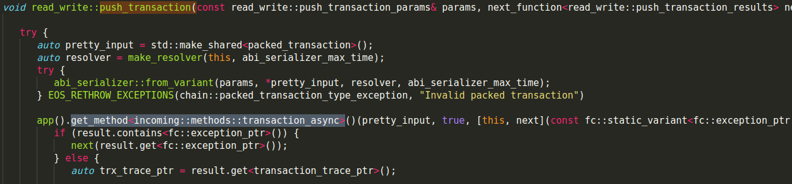
在producer_plugin插件的plugin_initialize函数中提前注册了incoming::methods::transaction_async。
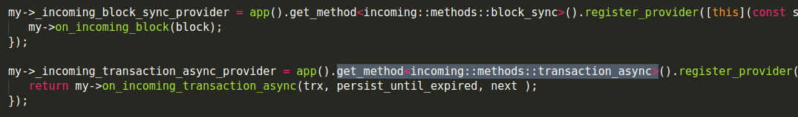
所以实际调用了producer_plugin_impl的on_incoming_transaction_async(trx, persist_until_expired, next )函数,
传递的参数分别是pretty_input,true,和一个lambda匿名函数
1 | app().get_method<incoming::methods::transaction_async>()(pretty_input, true, [this, next](const fc::static_variant<fc::exception_ptr, transaction_trace_ptr>& result) -> void{ |
3 在producer_plugin_impl的on_incoming_transaction_async中调用controller的 push_transaction，并执行trx。
将交易插入_pending_incoming_transactions中
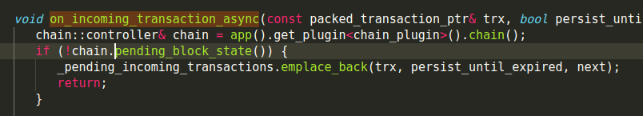
接下来调用了controller的push_transaction函数
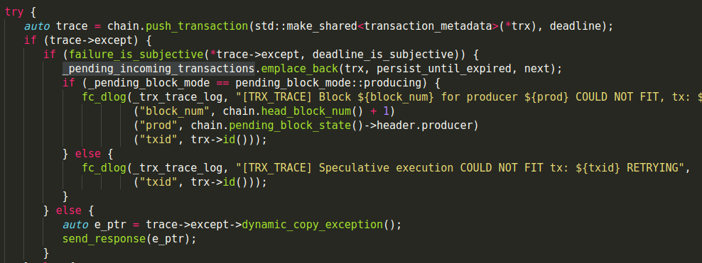
4 controller的push_transaction函数中发送消息accepted_transaction，而目前常用的网络插件为bnet_plugin,net_plugin目前已作为备用,
由于在bnet_plugin的startup函数中绑定了消息回调函数
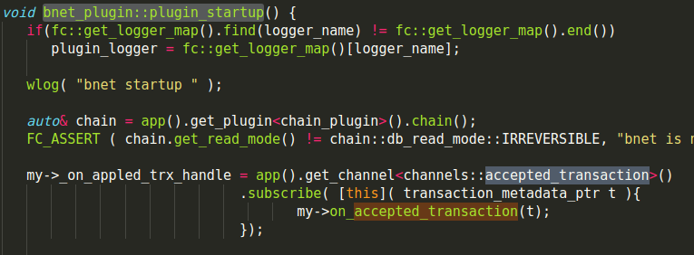
1 | my->_on_appled_trx_handle = app().get_channel<channels::accepted_transaction>() |
通过app().get_channel将channels::accepted_transaction信号和lambda表达式绑定起来，所以当controller发送信号accepted_transaction就会调用这个lambda表达式传递参数，从而调用bnet_plugin_impl中on_accepted_transaction函数。
5 bnet_plugin_impl通过on_accepted_transaction将消息广播到其他节点
1 | void on_accepted_transaction( transaction_metadata_ptr trx ) { |
6 其他节点收到消息后，进入on处理流程，发送transction消息
bnet_plugin处理消息函数
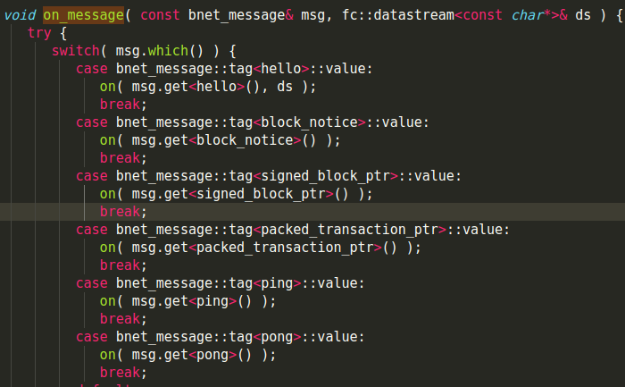
transaction消息处理
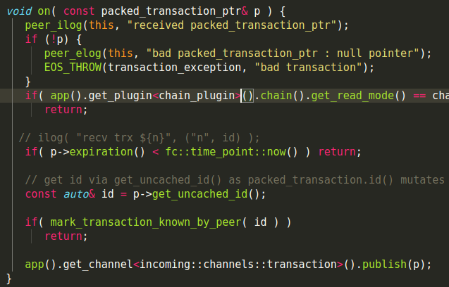
通过
1 | app().get_channel<incoming::channels::transaction>().publish(p); |
发送transaction消息。
7 producer_plugin绑定了消息处理的回调函数
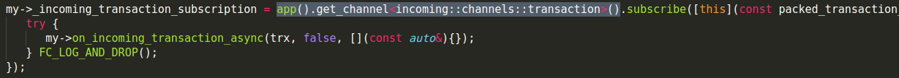
收到消息后，调用on_incoming_transaction_async，调用controller的 push_transaction，并执行trx。
以上就是eos交易同步过程。
区块生产过程
整体的区块生产流程
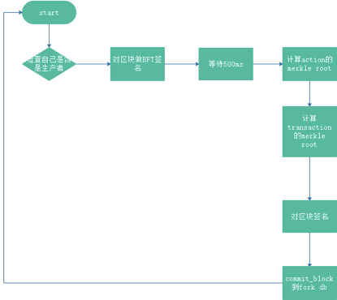
1 检查自己是否是生产者，一个生产者500ms出一次块，共出12次之后切换生产者。
2 对上次确认的区块到本次的区块做BFT签名，涉及函数set_confirmed和maybe_promote_pending,具体可以参看controller中start_block函数
3 等待一个出块周期500ms
4 计算action的merkle root
5 计算transaction的merkle root
6 对区块签名
7 提交区块到DB
8 递归调用schedule_production_loop
区块生产流程图
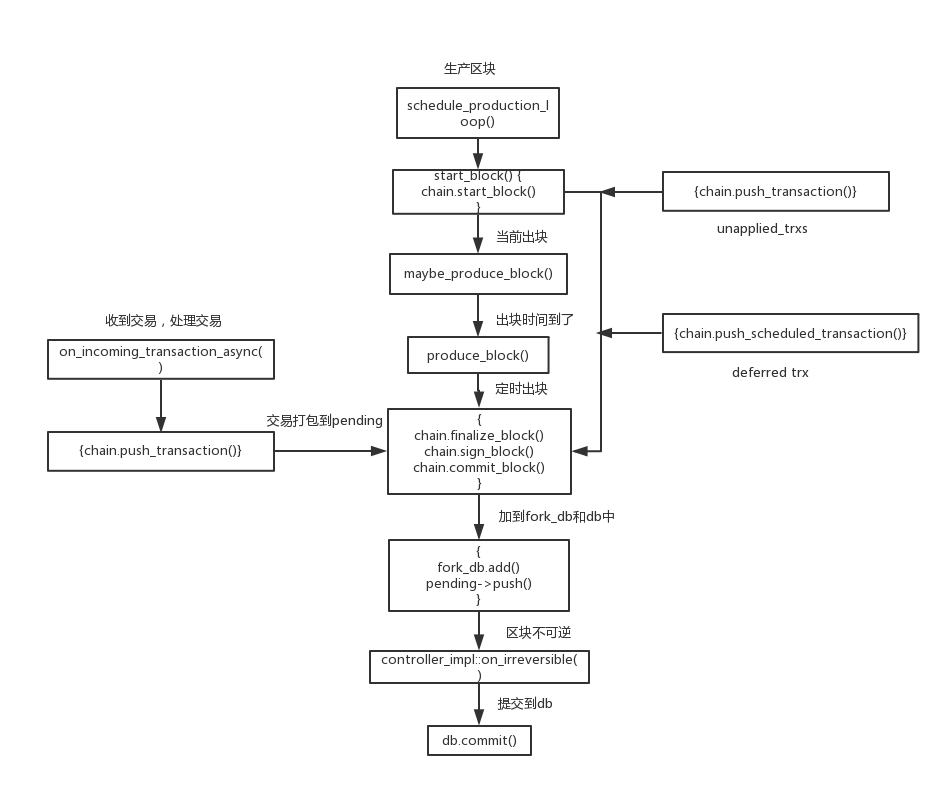
区块同步过程
1 参考区块生产过程，producer_plugin循环生产区块，先start_block处理BFT签名并确定不可逆的区块数，之后produce_block调用controller
2 controller使用finalize_block计算merkle root，使用commit_block提交到fork database中，
只截取commit_block部分代码
1 | void commit_block( bool add_to_fork_db ) { |
实际上controller的commit_block做了几件事
1 | 1 设置pending_block_state为有效的 |
下面展开fork_db的add函数
1 | block_state_ptr fork_database::add( const block_state_ptr& n, bool skip_validate_previous ) { |
fork db会依据start_block中计算的不可逆区块数，将不可逆的区块删除(调用prune)，
1 | void fork_database::prune( const block_state_ptr& h ) { |
并发送irreversible消息,controller绑定了该消息处理的回调函数
1 | fork_db.irreversible.connect( [&]( auto b ) { |
3 controller收到消息后，调用on_irreversible处理发送irreversible_block消息。bnet注册了该消息处理的回调函数
1 | my->_on_irb_handle = app().get_channel<channels::irreversible_block>() |
4 bnet_plugin 收到消息后，调用on_irreversible_block处理。并广播给其他节点。
5 controller发送accepted_block_header和accepted_block消息。
6 producer_plugin收到消息后， 调用on_block，calc_dpos_last_irreversible计算不可逆块。
7 bnet_plugin/net_plugin 收到之后广播到其他节点。
8 其他节点的bnet_plugin/net_plugin收到P2P消息后，发送block消息
1 | void on( const signed_block_ptr& b ) { |
9 Producer_plugin收到block消息后调用controller的push_block函数
10 Controller调用apply_block判断如果新收到的block比原有的链长，则切换到新链上
11 Controller调用finalize_block计算merkle root，使用commit_block提交到DB
以上就是区块同步过程。
区块同步流程图
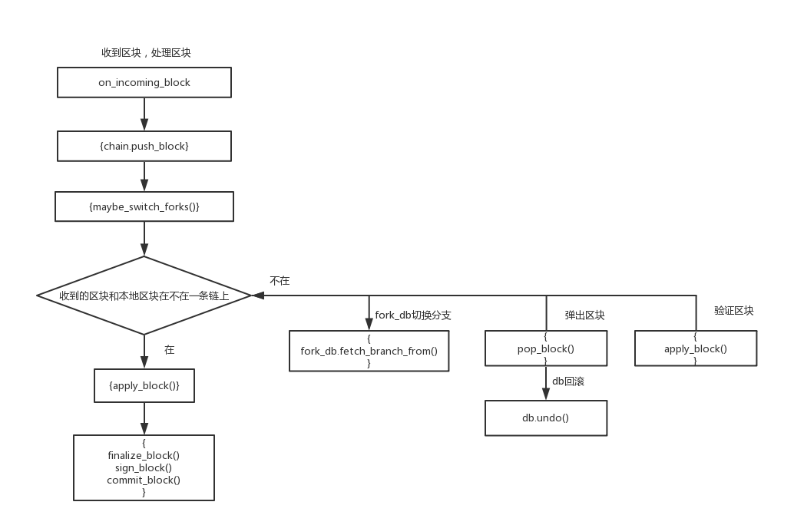
感谢关注我的公众号